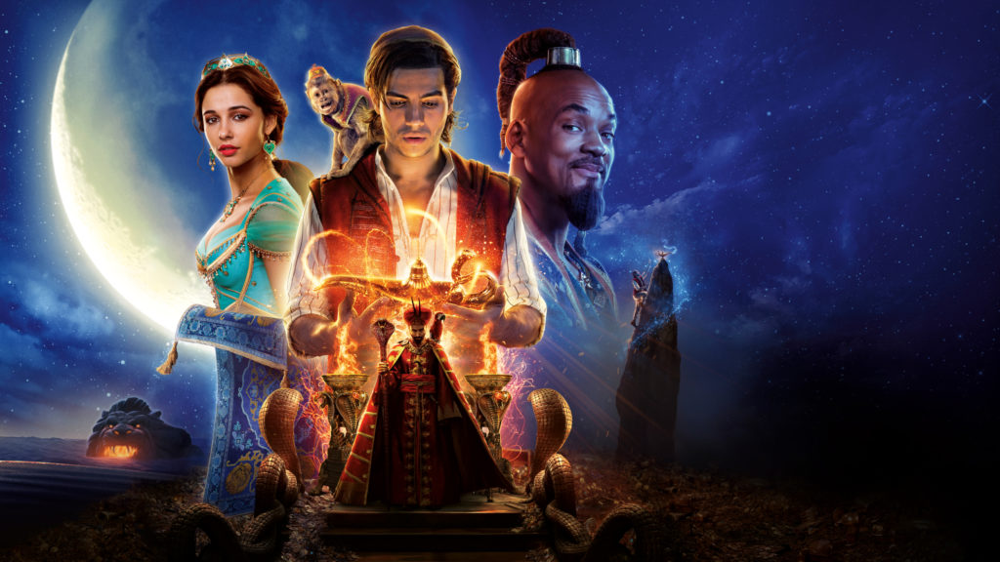

| Aladdín | .......... | Información |
|  |
Fecha de estreno: 24-05-2019 Duración: h2 09m Resumen: Rodeada por los Siete Desiertos, se encuentra la ciudad de Agrabah, una metrópoli de calles estrechas y plagadas de gente, donde en lo más alto puede verse el majestuoso castillo del Sultán. Allí vive la joven princesa Jasmine (Naomi Scott) junto con su padre el Sultán (Navid Negahban) y el visir real Jafar (Marwan Kenzari). La vida de todos ellos dará un giro inesperado después de que el joven Aladdin (Mena Massoud) entre en la Cueva de las Maravillas y descubra la lámpara mágica cuyo Genio (Will Smith) tiene el poder omnipotente de conceder tres deseos a cualquiera que la posea. |